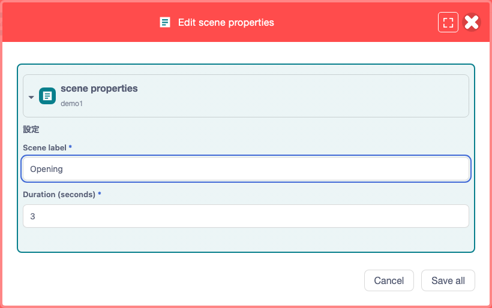
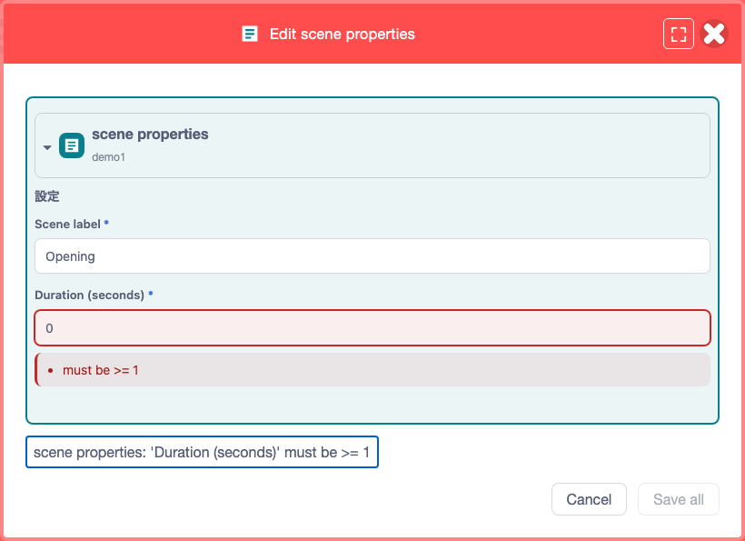

Feature guide 8/12 · Updated November 14, 2026
Edit extension data and documents
With a supported extension, you can edit block values in a form, or open YAML documents such as Kamishibai YAML scripts in a tab next to your code.
8.1 Edit block values in a form Requires a supported extension
With an extension that supports form editing, you can edit a block's arguments in a separate field for each item. For example, even when a block keeps a scene name and a display time together in one JSON string, you can enter each of them in its own field.
An extension developer only needs to provide a JSON Schema for the stored data and register it with the target block and argument to get a form dedicated to that block. The editor builds the input fields from the schema and validates required items and value ranges.
- Place a supported block in the code area and click the "Edit block" icon at the left end of the block.
- Change the values in the form. The fields shown depend on the extension.
- Click "Save all" to apply the values that pass validation to the block. To discard your changes, close the form with "Cancel". A change saved from the form can be reverted with a single "Undo" in the code area.
- To keep the changes in the project file, save the project from the "File" menu.

examples/extensions/block-editor.ts). The scene name and the display time are entered in separate fields.Catch input errors as you type
The form in the figure accepts a display time from 1 to 60 seconds. If you enter 0, the form shows that the value is out of range, and you cannot save until you correct it. Which values are accepted is up to the extension.

Edit nested blocks
If the extension registers parent and child blocks for editing, you can change the values of each in the same form. Fixed inputs such as numbers, strings and dropdowns can also be edited in dedicated fields when supported.
change, validate, cancel
apply to the block / undo
keep the SB3
The starting point and samples for extension authors are in the form-based block editor specification.
8.2 Choose between external YAML and documents and blocks in the project Requires a supported extension
Documents registered by a supported extension open from a data source block. How to open them is described in 8.3. The block's display name and the available formats depend on the document.
A document has a "Source location" setting that decides where it is loaded from, and a "Format" setting that decides whether you work with it as text or as blocks. For documents whose source can be changed, you can choose "File inside SB3" or "External URL". Whether a document can be converted to blocks is decided by the extension that provides it.
file icon
forms the provider supports
apply to the project's document
For an external URL, enter an HTTPS URL that allows fetching from the browser. Check the content with "Load preview", then apply it with "Validate and save source location". To edit an external YAML script, change the source location to "File inside SB3", save, and edit the copy imported into the project.
| Form | Where the document lives | Suited for |
|---|---|---|
| External YAML text | An HTTPS server. The project records where to find it | Loading a YAML script managed separately from the project |
| YAML file in the SB3 | The source text is bundled as a file in the project | Handing it over with the project. Editing the source text |
| Generic YAML blocks in the SB3 | Keys, values and lists represented as generic blocks | Changing items and their order while seeing the hierarchy |
| Dedicated blocks in the SB3 | Represented as dedicated blocks that follow the document's schema | Editing in the project's own terms, such as scenes and lines |
When you choose a "Format", a preview of the converted result appears. A preview in block form is for viewing only and cannot be edited. Click "Convert, validate and save the displayed format" and confirm to validate the content and apply it to the document. To switch blocks you are editing to another format, apply your changes to the source text first, then convert. To keep the result in the project file, save the SB3 at the end. YAML text is also covered by the "YAML text" scope of project-wide search.
Edit the source text in VS Code on your computer
Viewing, converting and validating documents also work in the public editor (GitHub Pages). To edit in VS Code, install Node.js and VS Code, start the local companion (a process on your computer that connects the editor and VS Code) as described in the README, and open the editor it serves. Open a working copy of the source text with "Edit in external editor" and save it in VS Code. Back in the editor, click "Convert, validate and save the displayed format" to apply the working copy to the document, then save the SB3.
How to start local integration · Document window specification
8.3 Open YAML from the project in a tab next to the code Requires a supported extension
In the Plus layout, clicking the file icon on a supported data source block opens the document as a tab in the same workspace as the code and the stage. Different documents open in separate tabs even if they have the same file name. Drag a tab to another pane to work on it next to the code; your draft is kept when you move it.
When you close a tab with unsaved changes, you can choose "Save and close", "Discard changes" or "Cancel". To keep the changes in the project file, save the document and then save the SB3 from the "File" menu.
To use the classic document dialog in the web version, save the document and the SB3, then reopen the editor with twPlusDockview=0 added to the URL. With this setting, you can no longer split the workspace.
8.4 View or play assets before choosing them Requires a supported extension
With the published Kamishibai extension rc.87, clicking the icon of an asset block (Asset) in a project prepared for editing (an editing SB3 built from the YAML script that contains blocks such as asset blocks) opens a preview of the asset along with the form. When you change which asset is specified, you can see the new image or play audio and video before saving. You can also check the dimensions of images and videos, the file size, and how the asset is stored. For a supported Teachable Machine recognition model, you can start the camera or microphone and try the recognition results.

In rc.87, previews are switched by twPlusBlockPreview in the editor URL. The setting is read once at startup, so reopen the editor after changing it.
- Not specified: only asset previews are enabled.
twPlusBlockPreview=1: scene and behavior previews are enabled as well as asset previews.twPlusBlockPreview=0: previews are not used, and the icon of an asset block opens only the form.
Kamishibai extension rc.87 release · What can be previewed and how to set it up
8.5 Preview scenes and behavior before applying them Requires a supported extension
For blocks for which an extension registers a preview, you can check how they look and behave while the values are still a draft in the form. For example, with a Kamishibai speech bubble block, you can change the line or the display time and see how it looks.
To try scenes and behavior with the Kamishibai extension rc.87, add twPlusBlockPreview=1 to the editor URL (8.4) and open a project prepared for editing that contains supported scene or behavior blocks.
adjust the text and display time
check that it is long enough to read
apply the final values to the block
When you are happy with the settings, apply them to the block with "Save all" in the form. Buttons added by extensions appear in the extension button area at the right end of the menu bar. When they appear and what they do depends on the extension. For example, the reload button shown while making a Kamishibai project is provided by the Kamishibai extension.
Scene and behavior previews in the Kamishibai extension · Buttons added by extensions